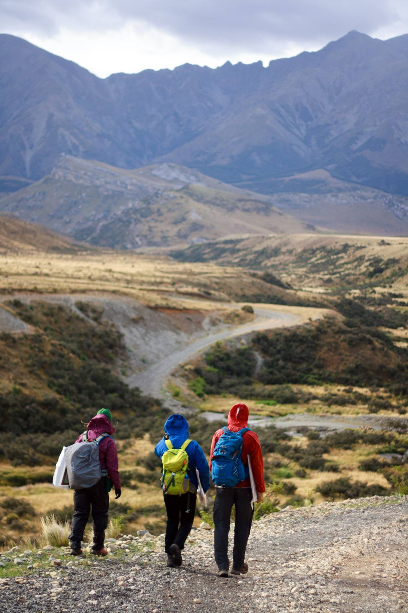
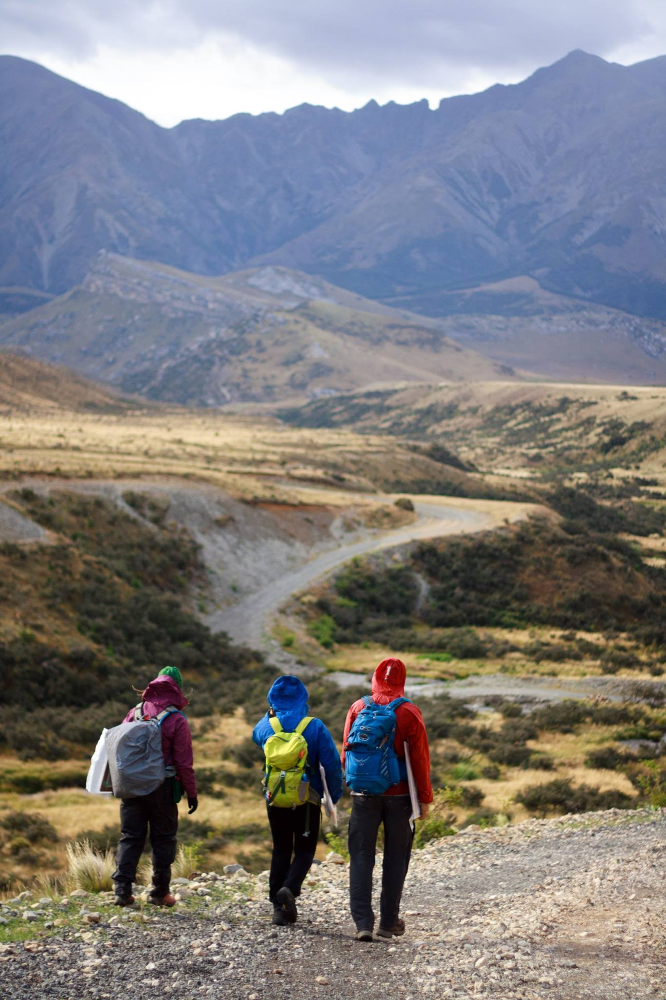
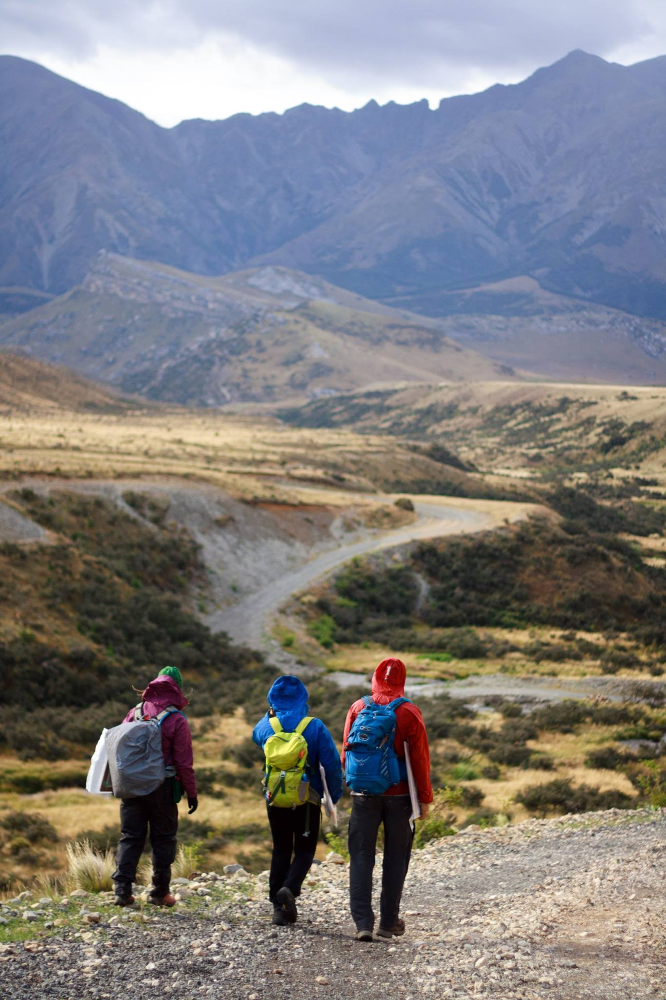
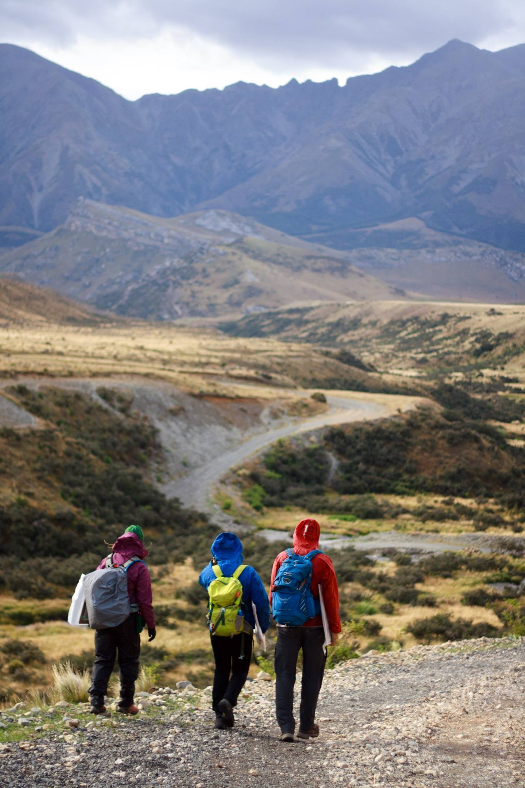
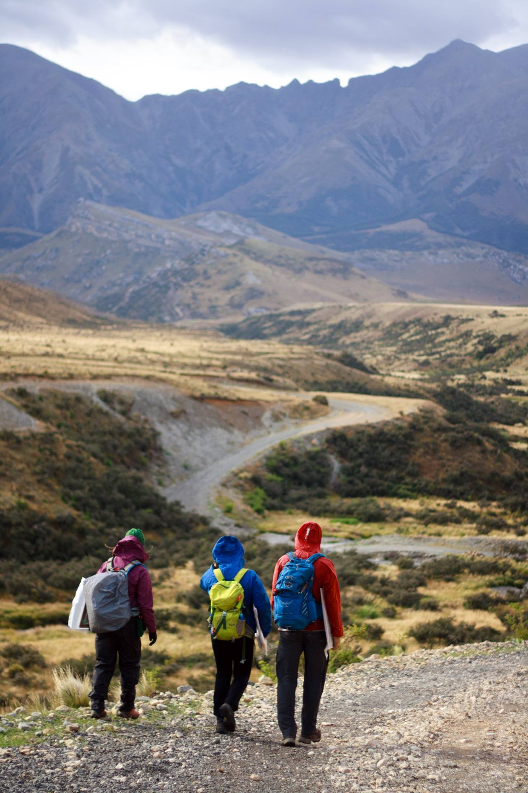

Anna C Thompson
Home
Research
Master's thesis
Undergraduate thesis
Misc. projects
Fieldwork
Overview
Swiss Alps
Canadian forefields
Glaciovolcanics in Iceland
New Zealand field school
Painted Canyon mapping project
Stream and wetland restoration
Pika Project
Portfolio
Writing
GIS
Adobe Illustrator
Pen and ink
My Life
?
CV
New Zealand Field School, 2016
Carleton College Geology in New Zealand Off Campus Study Program
South Island Mapping Projects



 



 
